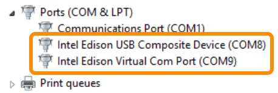

-
Connect a micro-USB cable to the device mode micro-USB port of the Intel® Edison expansion board, and the other end to your computer.

If you see both “Intel Edison USB Composite Device” and “Intel Edison Virtual Com Port” items show up in Device Manager under “Ports (COM & LPT)”, the drivers have been successfully installed.

Do not see Intel® Edison devices show up in Device Manager?
- Check that the Intel® Edison is in device mode.
- Check that the micro-USB cable is securely connected to the device mode micro-USB port of the Intel® Edison expansion board.
- Restart your computer to ensure driver changes to take effect.
- Try a different micro-USB cable to eliminate errors due to a bad cable.
- Update the firmware on the Intel® Edison.